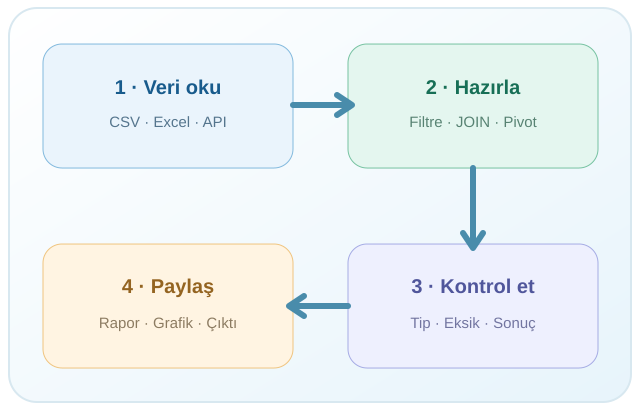

Programlamadan güvenilir veri analizine
R PROGRAMLAMA • VERİ BİLİMİ • UYGULAMA
Soru sor → Kodla → Kontrol et → Paylaş

R’nin asıl gücü: yalnızca hesaplamak değil, işlemi anlaşılır ve yeniden üretilebilir hâle getirmek.
Kaynak: R Project — What is R?
Açık kaynak · Genişletilebilir
Örnekleme, çıkarım, regresyon, zaman serileri, deney tasarımı.
Veri doğrulama, gösterge üretme, otomasyon ve raporlama.
Veri hazırlama, keşif, model kurma, model değerlendirme.
Grafikler, Quarto raporları, Shiny etkileşimli uygulamaları.
| R | Python | |
|---|---|---|
| Köken / güçlü gelenek | İstatistik ve veri analizi | Genel amaçlı yazılım geliştirme |
| Veri araçları | dplyr, tidyr, ggplot2 |
pandas, polars, scikit-learn |
| Üretim / otomasyon | R scriptleri, Quarto, Shiny | Scriptler, servisler, uygulamalar |
| Ortak payda | Veri hazırlama, modelleme, tekrarlanabilirlik | Veri hazırlama, modelleme, tekrarlanabilirlik |
Doğru soru “hangisi daha iyi?” değil, “hangi iş için hangi araç uygun?”
Kod editörü, Console, dosyalar, grafikler, yardım ve Git entegrasyonu sunan geliştirme ortamı.
Kurulum sırası: Önce R, sonra RStudio. Kaynak: Posit kurulum rehberi
Comprehensive R Archive Network: R dağıtımı, paketler ve dokümantasyon için resmî dağıtım ağı.
readr · readxl · haven
dplyr · tidyr · ggplot2
DBI · quarto
Paket kurmak ile oturuma yüklemek farklıdır; canlı uygulamada göreceğiz.
Çoğu zaman en zahmetli aşama: veriyi doğru okumak, tanımak ve hazırlamak. Kusurlu veriyle iyi bir model kurmak güçtür.
İlke: Yapay zekâdan yararlan; doğrulamayı devretme.
Source · Düzenlenen .R dosyaları
Console · Komut ve sonuçlar
Environment · Oturumdaki nesneler
Files / Plots / Help · Dosyalar, grafikler ve belgeler
Bir sonraki adım: RStudio’ya geçip bunları canlı olarak tanıyacağız.
Teknik başvuru: R Project · Posit RStudio IDE · R for Data Science
R Programlama Eğitimi · Açık öğrenme materyali